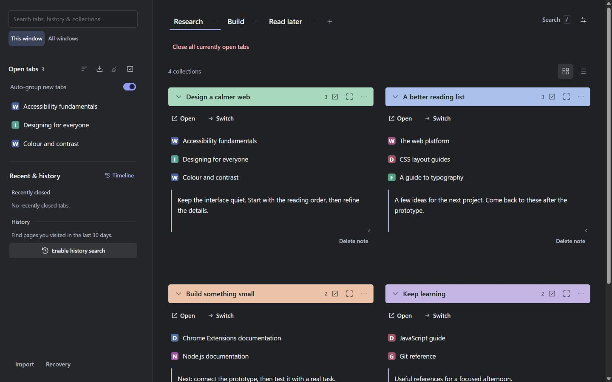

{kind=link}
Put work away
Save tabs into a collection. Add groups and notes, then arrange your projects into reorderable spaces.
Explore your library →LeoTabs · Tab Manager & Switcher
Save your browsing work into collections. Switch between projects, find that useful page, and pick up where you left off.
Chrome Web Store launch in preparation

Your everyday workspace
From a quick search to a long-running project, give your browsing work a place to come back to.
Save tabs into a collection. Add groups and notes, then arrange your projects into reorderable spaces.
Explore your library →Open a saved collection or switch to it when you're ready. Choose whether your current collection updates as you browse.
How switching works →Search open tabs and saved links. Use the visual switcher to recognise a page and jump straight back in.
Find your next tab →Optional connections
Connect your own services when you need them. Everyday tab management works on its own.
Turn related links into groups, get a collection overview, and find a name for newly saved work.
Uses link metadata, not full page text. Configured AI can name new saves automatically. Provider charges may apply.
Set up AI and understand what is sent →Send a collection or your entire library to Notion, with a page for each collection's links, groups and notes.
Exports a snapshot. Changes in Notion and LeoTabs do not sync. Pause larger exports and continue from Recovery.
Connect Notion and export your first page →Built for your keyboard
Open the visual switcher
Go straight to your library
Search without distractions
Change these defaults in your browser's extension shortcuts. See all shortcuts →
Local at its core
No LeoTabs account, telemetry or advertising. Your core library lives in your browser profile. Keep a portable copy with backup JSON, bookmark HTML or Markdown.
AI and Notion send data directly to the services you configure. You choose whether to connect them.
Read the privacy policy →Yes, today. Optional AI providers can charge for their APIs. Future optional features needing servers may have paid plans to cover costs and support the project, and may generate profit. There is no paid LeoTabs plan now.
No. Saving, switching, search, notes, file export and website grouping work without an AI connection.
Yes. Download backup JSON, bookmark HTML or Markdown. Back up before uninstalling or changing installations: local data is tied to the extension's identity in your browser. Read the backup guide.
Undo and Recovery help restore saved work after supported actions. They cannot reverse a provider request or delete an exported Notion page. See what can be recovered.
The project uses MPL-2.0. The repository is being prepared for public access after the first Chrome Web Store release is live.
Start with your first collection. Build from there.